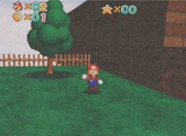
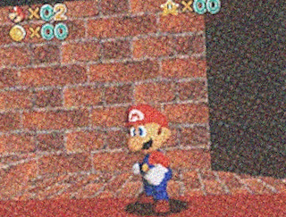
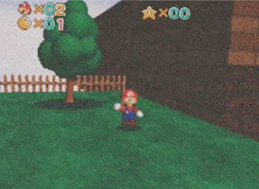
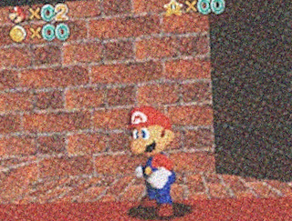
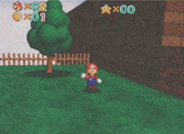
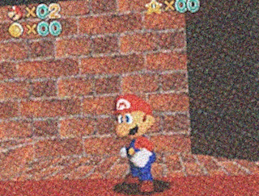

 
 
The '95 Archives | Timeline // About // Credits
Before during, and after the B-ROLL development, we worked on various elements. Peach's castle and the common stages were created as prototypes.
What will become of Mario's palette before it's finalized? It seems he features dark blue overalls, a warm yellowish face, and a pure red-plumber's outfit!!
Imagine if the Nintendo 64's console performance started lagging—maybe because I forgot to update the microcode patch. Funny enough, right?
 

This website was created by Wut404.